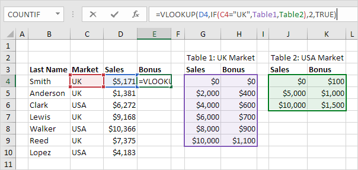

Vlookup
Pencocokan Tepat | Perkiraan Pertandingan | Vlookup Terlihat Benar | First Match | Vlookup is Case-insensitive | Beberapa Kriteria | #N/A kesalahan | Beberapa Tabel Pencarian | Index dan Match | Xlookup
Fungsi VLOOKUP adalah salah satu fungsi yang paling populer di Excel. Halaman ini berisi banyak contoh VLOOKUP yang mudah diikuti.
Benar-benar cocok
Sebagian besar waktu Anda mencari kecocokan yang tepat saat Anda menggunakan fungsi VLOOKUP di Excel. Mari kita lihat argumen dari fungsi VLOOKUP.
1. Fungsi VLOOKUP di bawah ini mencari nilai 53 (argumen pertama) di kolom paling kiri tabel merah (argumen kedua).
2. Nilai 4 (argumen ketiga) memberitahu fungsi VLOOKUP untuk mengembalikan nilai pada baris yang sama dari kolom keempat tabel merah.

Catatan: Boolean FALSE (argumen keempat) memberi tahu fungsi VLOOKUP untuk mengembalikan kecocokan yang sama persis. Jika fungsi VLOOKUP tidak dapat menemukan nilai 53 di kolom pertama, itu akan mengembalikan kesalahan #N/A.
3. Ini contoh lain. Alih-alih mengembalikan gaji, fungsi VLOOKUP di bawah ini mengembalikan nama belakang (argumen ketiga disetel ke 3) dari ID 79.

Perkiraan Pertandingan
Mari kita lihat contoh fungsi VLOOKUP dalam mode pencocokan perkiraan (argumen keempat disetel ke TRUE).
1. Fungsi VLOOKUP di bawah ini mencari nilai 85 (argumen pertama) di kolom paling kiri dari tabel merah (argumen kedua). Hanya ada satu masalah. Tidak ada nilai 85 di kolom pertama.

2. Untungnya, Boolean TRUE (argumen keempat) memberi tahu fungsi VLOOKUP untuk mengembalikan perkiraan kecocokan. Jika fungsi VLOOKUP tidak dapat menemukan nilai 85 di kolom pertama, itu akan mengembalikan nilai terbesar yang lebih kecil dari 85. Dalam contoh ini, ini akan menjadi nilai 80.

3. Nilai 2 (argumen ketiga) memberitahu fungsi VLOOKUP untuk mengembalikan nilai pada baris yang sama dari kolom kedua tabel merah.

Catatan: selalu urutkan kolom paling kiri dari tabel merah dalam urutan menaik jika Anda menggunakan fungsi VLOOKUP dalam mode pencocokan perkiraan (argumen keempat disetel ke TRUE).
Vlookup Terlihat Benar
Fungsi VLOOKUP selalu mencari nilai di kolom paling kiri dari tabel dan mengembalikan nilai yang sesuai dari kolom ke kanan.
1. Misalnya, fungsi VLOOKUP di bawah ini mencari nama depan dan mengembalikan nama belakang.

2. Jika Anda mengubah nomor indeks kolom (argumen ketiga) menjadi 3, fungsi VLOOKUP akan mencari nama depan dan mengembalikan gaji.

Catatan: dalam contoh ini, fungsi VLOOKUP tidak dapat mencari nama depan dan mengembalikan ID. Fungsi VLOOKUP hanya melihat ke kanan. Jangan khawatir, Anda dapat menggunakan INDEX dan MATCH di Excel untuk melakukan pencarian kiri .
First Match
Jika kolom paling kiri dari tabel berisi duplikat, fungsi VLOOKUP cocok dengan instance pertama. Sebagai contoh, lihatlah fungsi VLOOKUP di bawah ini.

Penjelasan: fungsi VLOOKUP mengembalikan gaji Mia Clark, bukan Mia Reed.
Vlookup tidak peka huruf besar-kecil
Fungsi VLOOKUP di Excel melakukan pencarian peka huruf besar/kecil. Misalnya, fungsi VLOOKUP di bawah ini mencari MIA (sel G2) di kolom paling kiri tabel.

Penjelasan: Fungsi VLOOKUP bersifat case-insensitive sehingga mencari MIA atau Mia atau mia atau miA, dll. Akibatnya, fungsi VLOOKUP mengembalikan gaji Mia Clark (contoh pertama). Gunakan INDEX, MATCH, dan EXACT di Excel untuk melakukan pencarian peka huruf besar/kecil.
Beberapa Kriteria
Apakah Anda ingin mencari nilai berdasarkan beberapa kriteria? Gunakan INDEX dan MATCH di Excel untuk melakukan pencarian dua kolom.

Catatan: rumus array di atas mencari gaji James Clark, bukan James Smith, bukan James Anderson.
#N/A Errors
Jika fungsi VLOOKUP tidak dapat menemukan kecocokan, ia mengembalikan kesalahan #N/A.
1. Misalnya, fungsi VLOOKUP di bawah ini tidak dapat menemukan nilai 28 di kolom paling kiri.

2. Jika mau, Anda dapat menggunakan fungsi IFNA untuk mengganti kesalahan #N/A dengan pesan ramah.

Catatan: fungsi IFNA diperkenalkan di Excel 2013. Jika Anda menggunakan Excel 2010 atau Excel 2007, cukup ganti IFNA dengan IFERROR. Ingat, fungsi IFERROR juga menangkap kesalahan lain. Misalnya, #NAME? kesalahan jika Anda tidak sengaja salah mengeja kata VLOOKUP.
Beberapa Tabel Pencarian
Saat menggunakan fungsi VLOOKUP di Excel, Anda dapat memiliki beberapa tabel pencarian. Anda dapat menggunakan fungsi IF untuk memeriksa apakah suatu kondisi terpenuhi, dan mengembalikan satu tabel pencarian jika TRUE dan tabel pencarian lainnya jika FALSE.
1. Buat dua rentang bernama : Tabel1 dan Tabel2.

2. Pilih sel E4 dan masukkan fungsi VLOOKUP yang ditunjukkan di bawah ini.
Vlookup dengan Beberapa Tabel Pencarian">
Penjelasan: bonus tergantung pada pasar (Inggris atau USA) dan jumlah penjualan. Argumen kedua dari fungsi VLOOKUP berhasil. Jika Inggris, fungsi VLOOKUP menggunakan Tabel1, jika AS, fungsi VLOOKUP menggunakan Tabel2. Setel argumen keempat fungsi VLOOKUP ke TRUE untuk mengembalikan perkiraan kecocokan.
3. Tekan Enter.
4. Pilih sel E4, klik di sudut kanan bawah sel E4 dan seret ke bawah ke sel E10.

Catatan: misalnya, Walker menerima bonus $1.500. Karena kami menggunakan rentang bernama, kami dapat dengan mudah menyalin fungsi VLOOKUP ini ke sel lain tanpa mengkhawatirkan referensi sel.
Indeks dan Pertandingan
Alih-alih menggunakan VLOOKUP, gunakan INDEX dan MATCH. Untuk melakukan pencarian lanjutan, Anda memerlukan INDEX dan MATCH. Mungkin ini satu langkah terlalu jauh untuk Anda pada tahap ini, tetapi ini menunjukkan kepada Anda salah satu dari banyak formula hebat lainnya yang ditawarkan Excel.

Xlookup
Jika Anda memiliki Excel 365, gunakan XLOOKUP, bukan VLOOKUP. Fungsi XLOOKUP lebih mudah digunakan dan memiliki beberapa keuntungan tambahan.